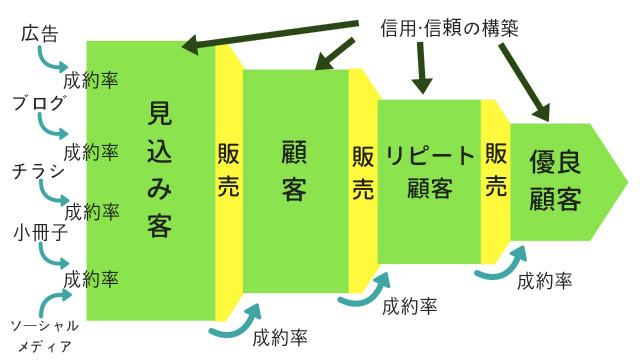

| 儲かる仕組みで稼ぎ続ける技術: 集客と販売を操る５つのステップ | |
| 野田謙一 | |
| (2018) | |
「なんでこんな価格で売るんだ？」
あなたも他社の広告を見て同じように感じた経験があるかも知れません。
スズメの涙ほどの利益しかとれない価格で販売をしているライバルを見つけては、
「在庫の現金化かな？」
「バックマージン狙いか？」
「どうせ長くは続かない」
こころのどこかでそんなライバルをバカにして、自分はもっといいサービスを提供してお客様に喜んでもらうんだ。
かつての私はそう考えていました。
でも後になって気づきました、本当のバカは自分だったということに。
集客と販売の仕組みを構築している会社は、仕組みを構築していない会社が決してマネすることができない販売価格・販売方法でたくさんの新規客を集めています。
そして単なる薄利多売ではなく、実は十分な利益を残しています。
ただ、外からは単純な安売りにしか見えていないだけなのです。
集客と販売の仕組みと聞くと、大きな会社にしかできないことのように思うかもしれませんが、小さな会社はもちろん、個人事業であっても導入できるとても強力な方法です。
本書で紹介する仕組みを導入すれば、
・紹介や口コミなど、いつ発生するかわからない売り上げに頼らずに済む
・欲しいときに売上をあげることができるようになる
・２～３カ月先の売上予測がほぼ間違えずにできるようになる
・ライバルに気付かれずに大きな利益を残すことができる
・いくつかの数字を見るだけで改善すべきところが誰にでもすぐにわかるようになる
このような未来を手に入れることができます。
この強力な集客と販売の仕組みを、初めて導入する場合に必要な５つのステップにわけて紹介していますので、是非この仕組みを導入してあなたのビジネスにお役立てください。
あなたは今、理想の毎日を過ごしていますか？
あなたのビジネスに限っていうと、どうでしょうか？
・ランキングサイトや大手ECサイトなど、価格競争の激しい場所で手数料を支払って新規顧客を獲得しているけれど、リピートにつながらない。
・コネクションのおかげで一定の売上はあるけれど、それ以外の売上がなくビジネスが発展しない。
・新聞の折込チラシなどマスに向けた広告で商品を購入してくれる人を獲得しているけれど、費用対効果が悪く、リピートも少ない。
・紹介や口コミ、他人や天気まかせの売上ばかり。
もし少しでも思い当るところがあるなら、理想の姿がどんなものなのか、一緒に考えてみましょう。
『自分の商品・サービスで、できるだけたくさんの人に喜んでもらい、自分も十分な利益を得たい』
これは私が考えるビジネスにおける理想の姿です。
あなたの理想の姿はどのようなものでしょうか？
いろいろな表現の違いはあったとしても、自分でビジネスをしている人の多くに共感してもらえるものだと思います。
この理想の姿を現実にするためにはどうすればいいと思いますか？
順を追って考えてみましょう。
まずできるだけ多くの人に喜んでもらい、十分な利益を得るには、商品を売らなくてはいけません。
では「商品を売る」にはどうすればいいのか。
そのためには、販売する商品やサービスについて、話を聞いてもらわなくてはいけない。その内容に魅力を感じたら購入してくれるはずだからです。
でも販売者の話を聞きたい！という人が列を作って待っているなんてことはありません。
それどころか周りにいる人に話を聞いてください、とお願いしても誰も話を聞いてくれないですよね。
では私たちの話を聞いてくれる人が全くいないのか、というとそんなことはないはずです。
それがどんな人かと言うと、私やあなたが解決できる問題を今抱えていて、悩み苦しんでいる人。
あるいは、私やあなたが叶えてあげることができる未来を、現実にしたいと夢見ている人たちです。
そんな人たちが目の前に１００人いたとしたら？
きっとその中には、真剣にあなたの話を聞いてくれる人が何人もいるはずですし、少なくともそのうちの何人かはあなたの商品・サービスを購入してくれるでしょう。
それに比べてどんな悩みや願望があるかわからない人、１０００人に対して話を聞いてもらおうとするのは相当難しそうですし、その中から、商品・サービスを購入してくれる人を探そうとしても、一人もいないことだってあるかもしれません。
商品・サービスを必要としているであろう人に対してだけ、セールスをした方が良いのであれば、まず最初にするべきことは、あなたの商品・サービスを必要としていると思われる人を集めることだと言えそうです。
そして、それさえできれば、説明をして購入してもらうという後の工程は、それほど難しくはないような気がしますよね。
次に、十分な利益を得るためにはどうすればいいのでしょうか。
一つの商品から多くの利益を得るためには、できるだけ高く売り、コストをできるだけ下げるしかありません。
そうは言っても、価格は相場というものがありますし、仕入れ価格も自分だけ特別安く仕入れができるなんてこともなさそうです。
当然そういった努力はするにしても、まずは販売にかかるコストを低く抑えることを考えるべきだ、ということがわかります。
つまり、広告費や紹介料、手数料が発生しない売り方です。
新規顧客を獲得するコストは、既存の顧客に対して商品を販売する場合のコストの５倍～７倍も高いと言われています。
ですので、十分な利益を得ようと思ったら、新規顧客ではなく既存顧客に対して商品を販売しなくてはいけないということになります。
これまでのことから次のことが言えます。
・十分な利益を得たければ、既存の顧客に対して安定して一定数以上の商品を販売する
・既存顧客に対して安定して一定数以上の商品を売るには、既存顧客を増やす必要がある
・既存顧客を増やすには、新規顧客を増やさなくてはいけない
・新規顧客を増やすには、商品を必要としているであろう人をたくさん集めなくてはいけない
もっと単純化してみるとこうなります。
１．商品を必要としているであろう人をたくさん集める
２．商品を販売してたくさんの新規顧客を獲得する
３．既存顧客を増やして安定的に商品を販売する
これができれば、
『自分の商品・サービスで、できるだけたくさんの人に喜んでもらい、自分も十分な利益を得る』
という理想を叶えることができそうです。
集客と販売の仕組みとは、この３つを実現するためのものであり、誰でも継続的にPDCAサイクルを回し続けることができる仕組みでもあります。
「無料で集客ができる！」
ブログ、Facebook、Twitterなどさまざまなメディアを使った無料の集客法がいたるところで紹介されています。
あなたもチャレンジした経験があるかもしれません。
私もそんな無料の集客に必死に取り組んだ経験があるのでわかるのですが、これらの集客方法は、無料である代わりに多大な時間と労力を必要とします。
ブログは毎日記事を書きましょう。
Facebookには毎日投稿して他の人にいいね！して回りましょう。
Twitterは１日３回はつぶやいて、毎日２０人をフォローして・・・・・
もちろん、こういったやり方で成功している人もいるので、間違ってはいないのでしょう。
しかし問題は、どれも努力が実を結ぶまでに長い時間がかかるということです。
少なくとも、集客ができるようになればいいですが、１年経ってもまともに集客できないままの人は数多くいます。
また、自分のホームページやブログ記事がインターネット検索で狙ったキーワードで上位表示されていなければ、集客できるといっても、毎月ほんのわずかな人数であることも珍しくありません。
無料の集客方法の場合、もっと集客をしたい！と思った時、あるいは３人を１０人にしたい！と思った時にどうすればそれが可能なのか、明確な答えを見つけることができるでしょうか。
お客様を増やすために、
Facebookでどのような投稿をすればいいのでしょう。
ブログでどのような記事を、どれだけ書けばいいのでしょう。
Twitterで何をつぶやけばいいのでしょう。
このような無料集客は、Facebookのファンや友達の数、Twitterのフォロワー数、ブログの記事を読んでくれる人の数といった母数を増やすことで成り立っています。
つまり、簡略化して言うとFacebookのファンを増やせばその内、何パーセントかは商品を購入してくれるだろうという、確率の話になるのです。
では、毎月の集客できる数を倍に増やしたい時にやることは・・・
そうです、ファンの数を倍にしなくてはいけません。
いったいそれはいつ実現するのでしょうか？
結局のところ、無料集客に頼っている間は、大きくビジネスを発展させるのは難しいということなのです。
一方、広告はもっと単純です。
チラシを１万枚まいて、１０人の集客に成功した場合、２０人集客したければチラシを２万枚まけばいいだけです。
理想は無料の集客と広告を組み合わせて、両方で集客をすることですが、ビジネスが大きくなるにつれて必ず広告の比重が高まります。
お金がかからないことは魅力的ですが、裏返してみるとそれはビジネスを発展させるチャンスを逃しているとも言えるわけです。
これ以上どうやったら集客できるのだろう？
もしこのアカウントが削除されたら・・・
いつまで記事を投稿し続けないといけないの？
もしそんな不安を感じているなら、きっと広告にチャレンジする時が来ているのだと思います。
５万円の広告で１０万円の利益を得ることがわかれば、誰でも広告にお金を払いますよね。
広告も投資に対するリターンが見えれば怖くはなくなります。
そして、集客を仕組化する初期段階では、月の広告予算は大抵の業種で１～３万円から開始することができます。
もちろんもっと費用をかけることも、あるいはもう少し減らすこともできるでしょうが、そのぐらいの小さな金額から広告をスタートして、投資に対するリターンを見極めてから拡大することができます。
多くの人にメッセージを届けることができるからこそ、大企業は広告に多額のお金をかけているわけですから、使わない手はありません。
とはいえ、大企業と同じような広告の出し方をしてはいけませんが、小さな会社は、小さいなりの広告の使い方をすれば大きな成果を得ることができます。
広告と仲良くなれば、集客の安定度が一気に高まります。
◆◆◆まずはこれをやってみよう！◆◆◆
広告をだせる場所をみつけましょう。
あなたの見込み客に届く広告で一番小さなものとその費用を調べましょう。
その予算を毎月組めるかどうか検討してみましょう。
広告を出す場所は探せばたくさんあります。もしかするとライバルがこっそり出している広告を見つけることができるかもしれません。
「正直なところ、次の売り上げがいつ発生するかわからない」
もしそんな状態であれば毎日が不安ですよね。
お店を経営していて、
来店客数が天気まかせだったら？
前の道の人通りが減ったら？
楽天ビューティーなどランキングサイトからしか来店がなかったら？
大手メディアに集客の大部分を依存しているお店は意外と多いようですが、やはり価格競争が激しい場所なので、どこも低単価、低リピートの問題を抱えているようです。
そして利益が少ない分、数をこなそうとして毎日とても忙しいけれど、利益があまり残らない、時間がないから新しい集客や販売に取り組むこともできない、という悪循環が出来上がっています。
このような悪循環を断ち切り、売上の不安をなくすためには、自分で売り上げをつくらなくてはいけません。
顧客が喜んで買いたくなる商品をつくり、紹介し、販売する。
これが自分で売り上げをつくるということであり、安定した利益を得るためにやらなければいけないことです。
そのためには、今よりもっと深く顧客を理解しなくてはいけないでしょう。
商品を並べて好きなものを選んでもらう売り方では、利益を残すのは難しいのです。
販売を仕組化する過程では、顧客が抱える願望や欲求、痛み、フラストレーションをもとに利益がとれる商品づくりをします。
この利益商品をつくり、顧客に販売することで安定した利益とビジネスの発展につながるわけです。
◆◆◆まずはこれをやってみよう！◆◆◆
既存客に対して販売する特別な商品を考えてみましょう。
今ある商品でもいいですが、既存客が望んでいること、何とかしたいと思っていることを考えてそれを解決できる商品をつくってください。
次にどう説明すれば、商品を理解して購入してもらえるかを考えてみましょう。
「不安で他人に任せられない」
「仕事のクオリティが下がってしまう」
「人を雇う余裕なんてない」
さまざまな理由で仕事を抱え込んでいる人が大勢いますが、職人気質な一部の人を除いて、本当は誰かにやってもらいたいと思っているはずです。
他人に任せられないのはなぜか？
その理由は大きくわけて２つあります。
一つは仕事のレベルが下がってしまうことへの不安や恐怖で、もう一つは人を雇う余裕がないということです。
仕事のレベルが下がってしまうことへの不安や不満、恐怖は多くの人が経験していると思いますが、その解決策は与える仕事が大きさと明確な手順にあります。
マクドナルドが全世界にあれだけの店舗数を持つことができた理由の一つは、そのマニュアルにあることは多くの人が知っているはずです。
このお肉はマイナス１０度の冷凍庫で保管して、調理する時は１２０度の鉄板で４５秒焼いたら裏返して・・・
数字は適当ですが、このように全てを数字で表し、国や言葉が変わっても、誰でも同じことができるような手順をつくっているということです。
人に任せられないと言っている会社のほとんどは、仕事の細分化と作業手順の明確化がされていません。
マクドナルドのレベルまでは難しいとしても、これに近いことをしている会社は仕事を人に任せることができています。
そして集客と販売の仕組みは、ビジネスオーナーが一人でこなしている集客から販売までの流れをいくつかのパートに分け、更に各パートを細分化したやるべき仕事から成り立っています。
例えば、新規顧客を増やすということであれば、人を集める、信用・信頼を得る、販売するというパートに分かれ、人を集めるパートは更に、ブログ、広告、Facbookなどに分かれ、更に・・・といった具合です。
つまり、集客と販売の仕組みをつくれば、小さな一つの仕事から順番に人に任せることができるようになるのです。
お昼ご飯を食べる暇もないくらい忙しい状態だとしたら、それはあなたにとって理想の姿ではないはずです。
もし今、人を雇う余裕がないのであれば、集客と販売の仕組みはまさに、利益を残すためのものですから、継続して取り組むことによって利益を残し、人を雇い、小さな仕事から無理なく人に任せる、ということができるようになるでしょう。
小さな単位の仕事であれば、人に任せる不安も少なくて済みます。いずれはスタッフに仕事を任せ、空いた時間を利益に直結する仕事にあてることができるようになるのです。
◆◆◆まずはこれをやってみよう！◆◆◆
仕事の棚卸をしましょう。
緊急ではないけれど、重要な仕事を見つけましょう。
今すぐでなくても、いずれは人に任せる仕事を決めて、手順をまとめておきましょう。
売上が下がったとき、その原因がすぐにわかるでしょうか。
販売数が減ったから？
では販売数をもとに戻すために何に取り組まなければいけないか、根拠を持って言うことができるでしょうか。
多くの人は確信をもって原因を言い当てることはできません。
既存顧客からの売上が減ったのかもしれない・・・
新規の獲得が減ったのかな・・・
高単価のものが売れなかったのかも・・・
勘を頼りに対策を練っても、そう簡単にうまくいくはずがありません。
そしていろいろとやっても成果がでないので、何かを改善するのではなく、何かを追加してマイナスを補おうとしてしまいます。
おかげで、仕事は増えるばかりで、忙しいけれど利益が残らない状態になってしまうのです。
この「売上を上げるために、何をすればいいのかわからない」という状態は将来への不安を抱かせるだけでなく、結果につながらない行動を繰り返してしまい、自信を無くす原因にもなります。
もし、本当に改善すべきところがすぐにわかったら、迷いなく行動することができるはずですし、その問題を解決するために、新しい手法を学ぶことだってできるでしょう。
集客と販売の仕組みは、細かく分けたパートで成約率を計算します。
たとえば、既存客１００人に対してAという商品を紹介し、１０人が購入した場合、成約率は１０％ になります。
このような数値を定期的に確認することによって、成約率が落ちたところ、人数が減ったところに対して重点的に対策をしていくわけです。
仮に今売り上げや利益に大きな変化が無くても、新規客の獲得人数が減っていたら、それは将来の既存顧客の減少につながり、最終的に利益が減ることになると誰でも簡単に理解できるはずです。
つまり、継続していくつかの数字を確認していれば、誰でも簡単に改善しなくてはいけない箇所を見つけることができ、小さな単位の仕事にまで数字で絞り込めるので、スタッフでも改善策を考えることができるようになるのです。
◆◆◆まずはこれをやってみよう！◆◆◆
成約率を計算できるように必要な数値を集計しましょう。
次に実際に成約率を計算してみましょう。
計算結果を見ただけで、弱いポイントが見えてくるはずです。そこを改善してみましょう。
これまで、集客と販売の仕組みを使えば、
・理想の姿に近づける
・自分で売上をコントロールできるようになる
・仕事をスタッフや外注に任せることができるようになる
という話をしてきました。
ここではその『集客と販売の仕組み』の正体を明かしたいと思います。
本書で紹介する仕組みとは、古くは江戸時代の商人にも使われ、マーケティングの先進国であるアメリカでも多くの成功事例を出している手法である、
リストマーケティングという手法のことです。
日本でリストマーケティングをして成功している会社では、健康食品の株式会社やずや、化粧品のドモホルンリンクルで有名な株式会社再春館製薬所など、例をあげるときりがないくらいたくさんあります。
昔から通信販売の会社を中心に導入され、発展してきたリストマーケティングですが、その独特な手法からでしょうか、他の業種にはあまり広がりませんでした。
ただ、広い意味でリストマーケティングは日本でも古くから商人の間で活用されてきた手法です。
江戸時代には大福帳と呼ばれる顧客名簿を使って商売をしていましたし、昔は個人商店がそれぞれの顧客名簿を持ち、それを活用するのが当たり前の時代もあったのです。
しかし、スーパーマーケットやチェーンストアといった『大量の商品と安さによる集客』が広まり、一つの時代を築く中で、個人商店や小さな会社は次々につぶれていきました。
いくら顧客名簿を大事にしても競争には勝てない、多くの人がそう感じたとしても不思議ではありません。
しかし、そんな『大量に陳列された安い商品』が有効な時代も過ぎ去り、今ではチェーンストアもメンバーズカード、ポイントカードを発行して顧客の囲い込みに必死です。
そんなチェーンストアの販売方法は外から見ても理解しやすいので、多くの人が同じような売り方をしようとしてしまいます。
しかしそれは、小さな会社が一番やってはいけない方法です。
その典型的な例がチラシです。
スーパーのチラシのように大量の商品を紙面に載せ、写真と商品名と価格だけが書かれているチラシです。
このようなチラシはいたるところにありますが・・・・
そんなに価格競争がしたいのでしょうか？
一方、先ほど紹介した通信販売の会社のチラシは全く違います。
基本的に商品は一つだけ。初回購入特別価格などさまざまな特典をつけて、一つの商品の魅力を伝えようとしています。
そもそもリストマーケティングの販売方法とチェーンストアの販売方法では売り方が全く違うのです。
「通信販売のやり方は、うちの業種には合わない」
私が通信販売の例を出すと、ほぼ全員がそう言います。
わかりやすいのでいつも通信販売の例を出すのですが、当然その中身は改良され進化しています。
特にマーケティングの先進国であるアメリカでは販売する対象が、個人・会社にかかわらず多くの業種でリストマーケティングが導入され成功しています。
そんなアメリカで発展したリストマーケティングをこの１０年間、積極的に導入して成果を上げている業界が日本にもあります。
それはインターネット業界です。
インターネットで商品やサービスを販売している会社でリストマーケティングを導入していない会社はほとんどありません。
なぜなら、そうしなければインターネット上で広告費を捻出できないからです。
リストマーケティングはビジネスの全体像が外からは見えない為、一部を見ても「導入できない」と感じてしまうかもしれません。
しかし、業種・業態・会社の大きさに関係なく、リストマーケティングを取り入れて業績を上げている会社は数多くあるということを知っていただきたいのです。
世の中にはさまざまな仕組みが売られています。
「仕組みの話はもうたくさんだ」
そう感じている人も多いのかもしれません。
だとすれば、きっと過去に何かしらの『仕組み』を導入しようとして失敗した経験があるのではないでしょうか。
仕組みを導入して機能しない理由は主に３つあります。
１．目的
２．手段
３．人
この３つです。
まずは目的が明確ではない場合についてです。
これは、上手くいかないので、仕組みを導入すればうまくいくのではないか、と期待しているケースです。
何を解決するために仕組みを導入するのかがハッキリしていなければ、仕組みがうまく機能するはずがありませんし、問題が解決するはずがありません。
次に手段です。
これは、仕組み（手段）そのものが役に立たないケースと、目的と手段にズレがあるケースがあります。
そもそも役に立たない仕組みであれば、どうしようもありませんが、目的と手段がズレている場合も当然ながらうまく機能しません。
その仕組みによって、何を得ることができるのかをしっかりと見極めて導入する必要があります。
最後に人です。
仕組みが機能しない一番の原因がこれですが、「本当に必要だと思っていない」「上司が勝手に導入した」など最初から他人事であった場合、人は仕組みを活用しようとはしません。
『仏作って魂入れず』という状態です。
当たり前のことですが、何もしなくても『仕組み』が勝手にお金を運んできてくれるわけではありません。
そして、新しい仕組みを導入してうまく機能させるには、多少なりとも新しい考え方やこれまでとは違う行動をしなくてはいけないということです。
新しい仕組み（集客と販売の仕組み）を自分のビジネスに導入するにあたって、私はかなり苦労した方だと思います。
本やセミナー・教材で学び、頭で理解したことを、いざ自分のビジネスに当てはめようとした時、部分的に取り入れることができても、全体の流れをうまく作ることができずにいました。
既存の販売方法や仕組みをどうやってリストマーケティングに当てはめたらいいのかがわからず、ずっと悩んでいたのです。
しかし、ある時「もういいや」と諦めました。
「新しく事業を立ち上げたと考えて、完全に切り離そう」
そうやって白紙の状態から仕組みづくりをすることにしたのです。
特に商品を変えたわけでもないので、部分的に作業が重複してしまい、二度手間になった部分もありましたが、白紙の状態にしたおかげで、思いのほか上手くいきました。
もし私と同じように、既存のビジネスにリストマーケティングを導入しようとして、うまく当てはまらないと感じる場合は、白紙の状態からリストマーケティングの仕組みをつくり、少しづつ新しい手法の比重を高めていくやり方が良いかもしれません。
最初の仕組みをつくる作業と、仕組みを運用する場面で、二度手間となる非効率な作業が発生してしまいますが、既存の売上を確保しながらビジネスを再構築することを考えると、有効な方法だと思います。
集客と販売の仕組みは大きく分けて新規客を獲得するパートと既存客に対してリピート販売をするパートに分けることができます。
これは販売する対象が違うため明確に分けて考えます。
どのパートでも同じですが、基本は商品を購入してくれる人の欲求や願望、痛み、フラストレーションを解決するものとして商品を提案します。
そして、その提案を喜んでくれそうな人を事前にリスト化しておき、そのリストに載っている人に対して商品の提案をするのです。
また、いきなり商品の販売をするのではなく、事前に信用・信頼を得られるようにコミュニケーションをして関係性を気づいてから販売をするのが基本となります。
ただし、商品や業種によっては、いきなり商品を販売するやり方が有効な場合もあるので、テストしながら最適な方法を見極める必要があります。
図で表してまとめるとこうなります。

１．無料・有料を問わず、幅広い媒体から見込み客を集めてリスト化します。
２．見込み客から信用と信頼を得られるように、積極的にアプローチします。
３．一定の信頼が得られた段階で集客商品を販売します。
４．購入した人は顧客リストに移り、顧客に対して更に深い関係を築きます。
５．一定の期間ごとに、顧客の欲求を満たす商品を紹介し販売します。
６．深い関係性を維持する取り組みと販売を繰り返し、優良顧客を増やします。
全体の流れとしては以上のようになります。
次の章では、いよいよ集客と販売を仕組みに変える５つのステップを明らかにしていきます。
ゴールや目標の設定が大事という話はもう聞き飽きた、そう感じる人も多いのではないでしょうか。
具体的な集客法などと比べて、あまり人気があるテーマではないのですが、仕組をつくるうえで土台をつくるとても大切なステップとなります。
あなたはダイエットの成功率を知っていますか？
データの取り方によって差はあると思いますが、あるジムのトレーナーの方に聞いたところ
ダイエットの成功率は２０％
ぐらいだそうです。
一方、アメリカの研究者が実施したアンケート結果で興味深いものがありました。
ダイエットをする理由と成功率についてです。
・生活習慣病など、体に危機感をもっている人は７３％
が成功
・キレイに（かっこよく）なりたいという理由の人は８％
が成功
ダイエットの業界は毎年のように人気のダイエット法が生まれますが、基本はカロリーの摂取量を減らして、消費量を増やすだけです。
このことは誰もが知っていますし、特殊な技術をマスターしないといけないわけでもありません。
つまりダイエットが成功するかどうかは、絶対にやせる！という強い意志があるかどうかに
かかっていると言えます。
生活習慣病などで体に危機感を感じている場合は、現状を変えなくては、今まで通りではいられなくなるという恐怖が怠け心に打ち勝って行動を生みます。
一方で、キレイになりたい、かっこよくなりたいという、夢や理想を追っている場合は、現状を変えなかったとしても今まで通りの生活が続くだけです。
人は誰でもわざわざ努力をして現状を変えるよりも、今のままでいる方がラクなのです。
これらのことから次の２つのことがわかります。
一つ目は、人は誰でもリスクを回避することを優先的に考える傾向があり、メリットを得るよりもデメリットを避けたいという気持ちの方が強いということです。
これをプロスペクト理論と言います。
二つ目は、心の底から望んでいれば人は行動するということです。
どういうことかというと、体に危機感を感じてダイエットを始める人は、このままでは、今まで通りの生活ができなくなるかもしれないという切迫した恐怖を感じ、それを避けるために行動しています。
やせなければヤバイ！と本気で思っているわけです。
しかしキレイになりたい、かっこよくなりたいという理由の場合、本当にやせてきれいになりたいと心の底から思っているのかというと、それは怪しいわけです。
テレビや雑誌で活躍するモデルやタレントを見て、あんなにやせてキレイになれたらいいなという憧れや、やせている方がキレイという世間一般の考え方に影響を受けてダイエットをしようと思っただけかもしれません。
アメリカのアンケート結果でいうと、やせてキレイになりたい、かっこよくなりたいと思ってダイエットを始めた人の内、成功した８%の人だけが心の底からそう思っていた、と言えるのかもしれません。
これをビジネスの世界に置き換えてみると、年商１億円、１０億円、１００億円など年商を目標とする場合に同じことがよくおこります。
会社として
・年商１億にも届かないのははずかしい
・年商１億を超えないビジネスはビジネスではない
・１０億を超えられない経営者は・・・・
言い出すときりがありませんが、このような年商に対しての世間の評価や世間体を気にして目標設定をしている経営者も少なくありません。
しかし、本人が現状にそれなりに満足している限り、その目標が達成されることはないでしょう。
結局のところ、ゴールや目標設定において、自分自身が本当に望んでいることでなければその目標が達成される可能性は極めて低いということであり、多くの目標が達成されないのも、心の底から達成したいと思っていないからなのです。
ポイント！
ゴールと目標は心の底から達成したいものにする。
それが達成できない場合の痛みや損失を明確にすると更によい。
心の底から達成したい願望でなければ、人は行動に移すことができないとしたら、そして目標が達成されないとしたら、今のビジネスをする目的、経営理念、ミッションは本当に叶えたい夢になっているでしょうか。
経営理念やミッションを考えるとき、どうしても大企業のようなキレイでカッコいい言葉を使おうとしてしまいます。
社会貢献や人の役に立ちたいという思いは素晴らしいものですし、それ自体が悪いはずもありません。
ただ、他人の言葉や他人の願望をゴールに設定したところで、あなたを突き動かすパワーの源にはならないということです。
・そのことを考えると、自然と力が湧いてくるでしょうか。
・そのことを考えると、ワクワクするでしょうか。
・周りの人につい話してしまうことでしょうか。
・いつも頭の中から離れないことでしょうか。
今のビジネスをする目的が、ただお金を稼ぎたいということであったなら、それをきれいな言葉で隠すべきではありません。
１生理的欲求
２安全の欲求
３所属と愛の欲求
４承認の欲求
５自己実現の欲求
人の欲求は１の生理的欲求から５の自己実現の欲求へ向かって変化するという有名なマズローの欲求５段解説でもわかるように、人の欲求は達成されると次の更なる高い次元の欲求が現れます。
たとえ今、かっこいい目的を持ち合わせていなくても、それが達成されれば、自然と次の目的が現れます。
今本当に望んでいることを正しく認識し、その実現に向かって行動するからこそ大きな力を発揮できるのです。
目標はゴールにたどり着くまでの中継地点であり、登山でいうと次のベースキャンプになります。
キレイになるとか、英語が話せるようになるといったような、抽象的な言葉で目標設定をしてしまうと達成することが困難になりますので、具体的で数値化できるものにする必要があります。
目標を具体的にすると、目標に近づいている実感を得やすいという利点もあります。
日々、目標に近づいている感覚があれば、モチベーションが高い状態を維持して、行動し続けることができるようになります。
現状とゴールとの距離に応じて、目標の数はいくつ設定しても構いません。あなたがゴールまでの道のりをイメージして、区切りとして目指しやすい目標を立てたら、それぞれに対して期限を設けましょう。
そして、目先の目標には常に達成しやすい小さなものを設定し、成功体験を積み重ねるましょう。
目先の目標達成を続けることによって、最終的にゴールにたどり着くようにするわけですが、それまで気を付けて欲しいことがあります。
いわゆる、ドリームキラーとドリームサポーターです。
ドリームキラーから離れるのはもちろんですが、実はドリームサポーターと会話する機会を増やすことにはとても重要な意味があります。
それは、ピグマリオン効果と言われるもので、アメリカの教育心理学者ロバート・ローゼンタールが提唱した、教育心理学における心理的行動のひとつです。
ある小学校で知能テストを行う実験をしました。
教師には「テスト結果によって今後成績が伸びる生徒が分かる」と説明しましたが、実際には一般的な知能テストでした。
テスト後、成績に関係なく無作為に生徒を選び出し、今後成績が上がる生徒としてリスト化しました。
教師はこれを信じて選ばれた生徒たちに期待して指導をしました。
すると、本当にその生徒たちの成績が向上したそうです。
これは、適度な期待が相手のやる気を引き出し、またそれに応えようと努力し、その結果として成果を上げたということが言えます。
ドリームサポーターはまさに「あなたならできる」と言ってくれる人たちです。
ひとりでも多くのドリームサポーターを見つけて、会話する機会を持つようにしてください。
ゴール設定と同じく多くの人がリサーチにあまり時間をかけません。
しかし、チラシをつくる時、ホームページをつくる時、営業をする時、どんなときでもライバルと差別化できる独自の売りがあればいいのに！そう思いますよね。
そんな誰もが欲しい差別化できるポイント、ポジショニング、USPもリサーチをしなくてはつくることもできません。
このリサーチの質・精度によって 商品や会社の打ち出し方が変わり商品の売れ方にも大きく影響するのです。
リサーチは、顧客・市場、ライバル・業界、自社・商品、につておこないます。
それではまず、顧客と市場からみていきましょう。
顧客・市場
見込み客のリサーチは大きく分けて２通りあります。
一つは既存客へのアンケートから悩み、願望、痛み、属性などの共通点を見つけていく方法で、もう一つはライバルの顧客を調べる方法です。
既存客がいれば、聞き込みをするだけなので簡単ですね。共通すると思われるポイントを見つけ出すことができれば、人数の多い少ないは関係ありません。
問題は既存客のリストがない場合です。この場合はライバルの顧客を調べるしかありませんが、ライバル会社に頼んでアンケートを取らせてもらうわけにもいきません。
そこでインターネットで次のキーワードで検索してください。
「業種 お客様の声」
このネット上にあるお客様の声を集めて、どのような悩みや願望、痛みを抱えているのかを探り出していきます。
ただ、ネットのお客様の声は嘘も多いので、信用できないと感じたら参考にしないようにしてください。
業種によっては、あまりお客様の声が見つからない場合もあると思います。
その場合は、関連する業態のお客様の声を調べてください。
たとえば、BtoBで事務機器の販売をしていると、おそらくライバルのホームページを見てもお客様の声は少ないでしょう。
しかし、コピー機など扱っている商品単体で考えてみると業態が広がります。
事務用のコピー機をネットで販売している店舗はたくさんありますし、リースしている会社もあります。
モノによってはアマゾンや楽天のレビューが参考になることもあるので、範囲を限定せずに調べてみることをお勧めします。
ただ、広い範囲で収集したお客様の声は、あなたの見込み客の声の一部を含んではいても同じではありません。
見込み客が抱えている悩みや願望、痛みの全体像を理解するイメージで活用してください。
次に市場についてのリサーチです。
同じ商品であっても、異なる市場があるものです。
たとえば、牛丼屋さんでは店舗で食べてもらう以外にも、持ち帰り用の牛丼も販売しています。これは商品は変えず、飲食店の市場とテイクアウトの市場にアプローチしていることになります。
電気製品を例にすると、実店舗販売とネット販売で市場が違いますし、ネット販売の中でもアマゾンと楽天ではユーザー層が違います。またジャパネットたかたのような売り方をしている場合も別のユーザー層がいて市場は異なるということです。
実店舗販売でも家電量販店と街の電気屋さんではユーザー層が違うので別の市場となります。
どこで買っても商品に差はありませんが、購入者がサービスに対して求めているものが違うためそこに市場ができるのです。
別の例をあげると、街の電気屋さんとして商売をするならば、家電量販店やアマゾンが販売している価格など関係ないはずです。
なぜなら、街の電気屋さんで購入する人は価格が最重要ではないからです。
その市場における見込み客が何を望んでいるのか、他の市場とはどこが違うのかを明確にすることによって、戦う市場で本当に望まれている商品・サービスを提供できるようになります。
ライバル・業界
次にライバル調査です。
ライバルを調査する時、品揃えやサービスメニューの内容、強み、弱み、選ばれる理由は誰もが調べると思います。ただもう一つ調べてほしいのが、ライバルの集客方法です。
集客商品は何か
どのような広告を出しているのか
できればライバルの顧客となってそのサービスを体験してください。そうすれば、相手の良いところ、弱いところがわかりますし、既存客に対してどのような販促活動をしているのかを知ることができます。
ライバル調査ほど詳細にする必要はありませんが、業界の流れも定期的に調べておく必要があります。
一つの業界のなかでも必ず流行があります。
その波にのるだけではなく、その流行によって新たに生まれる顧客のフラストレーションや願望、欲求を知り、どうやってそれらの問題を解決する商品を提供するかを考えるようにしましょう。
このように、顧客の願望や欲求、痛み、フラストレーションの変化に応じて、常にそれに適した商品を提供することを意識すればビジネスは衰退することなく、大きく発展していきます。
商品・自社
自分のことを客観的にみることが難しいように、商品と自社の強みや実績を正確に理解している人は少ないものです。
実は見込み客に対してアピールできる凄い実績を持っていても、本人には当たり前すぎてアピールポイントになるとは思っていないことが多いのです。
もったいないですよね。
見込み客にアピールできる実績を見つけ出す手掛かりは、目立つ数字にあります。
業界では当たり前のことや、同業からするとたいしたことがない数字でも、一般人が聞くと「すごい！」と思われることはたくさんあります。
たとえば、３年間外回りの営業をしていた、と言ってもプロとして認識されるどころか、やっと一人前になったぐらいの印象しか受けません。
しかし、１０００人以上と会話した経験から学んだ～、というとなんだかすごそうに感じませんか？
年間２００日訪問営業をしていたとしら、３年で６００日。
１日２件新規で訪問すれば１２００人と会話したことになります。
挨拶をして断られるケースが大半だとしても、１０００という数字と表現の仕方でインパクトがあるものに生まれ変わります。
中身が伴わっていなくても関係ない！とは言いませんが、何も実績がない場合は、この例のように無理やりつくることもできるのです。
要は目立つ数字を見つけてそれにどうスポットライトを当てれば輝くかを考えれば、誰にでも、どの会社にもアピールできるものがあるということです。
一方、強みはどう見つければいいのでしょうか。
あなた（会社）の強みは顧客の立場から言うと、選んだ理由になります。
同じようなサービスを提供している会社はあるにもかかわらずなぜ当社を選んでもらえたのか、について既存のお客様に聞いてみましょう。
そこには思いもよらない回答をもらえることがありますし、予想通りであればそれはそれで戦略が成功しているということの証になります。
強み＝選ばれる理由、選ばれた理由
この認識をもって、どのような点でライバルよりも優位性をもち、どのような人に選ばれたいかを明確にすると見込み客を集める時のメッセージがより具体的になり、高い効果が得られるようになります。
たとえ今は「近いから」という理由だけで選ばれていても構わないのです。それは立派な強みの一つなので、これから別の強みを追加することに努めましょう。
その時、ライバル調査で浮かび上がった相手の弱点をつき、他社にフラストレーションを感じている見込み客を取り込む方法を考えると成果につながりやすくなります。
ビジネスの成功は、商品と顧客と競合のバランスから生まれます。ここであげた内容を常に意識してビジネスを調整していくことが、確実にビジネスの安定と発展につながっていきます。
起業家にとって商品やサービスは自分の分身ともいえる大切なものです。
考えられる限りの工夫をし、多くの人に喜んでもらえるようにと試行錯誤を繰り返して完成させた人も多いはずです。
そんな愛着ある商品の良さを一人でも多くの人に知ってもらいたい。そして多くの人に喜んでもらいたい。
そう思うことは自然なことです。
しかし、この考え方はとても大きな欠点を抱えています。それは、見込み客の願望や欲求を考慮されていない、ということです。
そう言うと多くの人が、
「そんなことはない」
「見込み客のことを考えてつくっている」
「見込み客の悩みを解決するにはこれがベストの方法だ」
このような答えが返ってきます。では、なぜそれほど最高の商品たちが思うように売れないのでしょうか。
認知度が不足している。
商品の良さをうまく伝えることができていないだけ。
小さな会社だからまだ信用度が低い。
いろいろと売れない理由を並べることはできても、あいかわらず商品は売れないままです。
認知度を上げるために大量の広告が必要なのでしょうか。商品の良さをうまく伝えるためにコピーライターを雇わなければいけないのでしょうか。信用してもらうには大きな会社でなくてはだめなのでしょうか。
実は商品の良さを知ってもらおうとすればするほど、売るのが難しくなります。
なぜなら、見込み客はあなたの商品がどれだけ良い商品かについて興味はないですし、
興味がない商品説明を長々と聞いてくれる人はほとんどいないですよね。
大好きな片思いの人に対して、自分の良さをわかってもらうことに必死になる人がいたら、あなたはきっとこんな感じでアドバイスするのではないですか？
「自分のことばかり話すのはやめたら？相手が喜ぶことをしてあげるのが先でしょ！」
「そんなことしてたら嫌われるよ。」
商品を喜んで購入してくれるお客様に出会うということは、恋人や仲の良い友人になりたいと思ってアプローチするのと同じことなのです。
もっと良い商品にすれば売れるというのは間違い
商品やサービスが売れないのは商品に魅力がないからだ、商品のクオリティーが低いからだと考える人もたくさんいます。
この場合、もっと高度な技術を身につけようとしたり、商品の機能を増やすなどの改良をしようとするのですが、これもほとんどの場合が間違いです。
そもそも、商品の良し悪しは使ってみなければ、あるいは体験してみなければ判断できません。
また、ある人にとっては十分なクオリティーであっても、別の人にとっては不十分であることはよくあることです。
これは初心者向けのサービス内容では、中級者以上の人が満足できないのと同じで、そのサービスを受ける人の属性や好みなどに依存します。
別の見方をすれば、そのクオリティーで満足する人を集めればよいわけですから、売れない理由にするには無理があります。
そのため、がんばってクオリティーをあげても、結局売れるようにはならないのです。
ではどうすれば売れる商品をつくることができるのでしょうか。
まずは見込み客の欲求や願望、痛みを把握してそれを解決する方法を書き出します。
この時必ず見込み客の欲求や願望、痛みをベースに考えるということです。決して商品をベースに考えてはいけません。
たとえば、体を鍛えるダンベルを販売していたとします。
商品をベースにするとムキムキになりたい人向けのダンベルとか女性用、中学生用などといった発想になってしまいます。
そしてこのダンベルがいかに良い商品かを説明しようとするのです。
・○○協会認定で99
.9%誤差がない正確な重さ！
・手の小さな人でも持ちやすい特殊形状グリップ採用。
・３年間色落ちしない超強力塗装。
・10
年間の保証付き
こんなことをアピールされても、何一つピンとこないですよね。
しかし、これが悩みや願望をベースに考えると発想が変わります。
女性用ダンベルを売ろうとした場合、見込み客の欲求はダイエットかもしれません。
ダンベルはダサい
↓
女性の部屋に置いても違和感がないかわいい色とデザイン＆
収納袋
トレーニング方法がわからない
↓
トレーニング方法を解説した無料動画付き
自分一人では続かない
↓
購入者専用コミュニティへの招待
会員向けパーソナルトレーナーのお試しチケット
キレイに痩せたい
↓
ダイエット中によるお肌の荒れを防ぐサプリメント＆
美容液
コミュニティ会員には栄養士によるダイエットレシピを提供
など・・・
まだまだいろいろなアイデアが出てきますが、これらを全て提供しなくてはいけないわけではありません。
しかし、提供できる商品・サービスを増やし、自分で提供できない部分は他の誰かに提供してもらうことによって、見込み客にとってより魅力がある商品にすることができます。
また、このような商品づくりをすれば、ライバルとの差別化はもちろん、商品の単価を上げることができ、顧客と販売者の両方にメリットがあるものになるのです。
そして商品を購入した顧客の欲求は満たされることがありません。一つの欲求を満たしたら、必ず次の欲求が出てきます。
この新たに生まれた顧客の欲求を満たす商品・サービスを提供し続けることができれば、あなたのビジネスは大きく飛躍することになるでしょう。
さまざまな商品・サービスのアイデアを出したところで、現実的に可能なものと今はまだできないものが出てくると思います。
まずできるところから開始するわけですが、すぐに提供できる商品を集客商品と利益商品に振り分けます。
集客商品はその名の通り、集客することを目的にした商品です。
集客商品の特徴はなによりもまず、見込み客が最初の購入をしやすい商品にすることです。
そのため通常は低価格の商品であり、短期的な欲求を解決する商品が集客商品となります。
一方、利益商品はより深い悩みや、解決まで時間がかかる問題が対象となることによって、高額な商品になることが多いです。
もちろん、化粧品のように同じ商品を何回もリピートして購入してもらうパターンや、関連商品を購入してもらうパターンもあるので必ずしも高額でなければいけないわけではありません。
重要なのは、見込み客に購入してもらう集客商品と、既存客に購入してもらう利益商品を明確に分けておくこと、そして集客商品と利益商品に関連性がある組み合わせにしておくことです。
せっかく集客商品で顧客を集めても、利益商品に関連性がなければ購入されるはずもないからです。
この利益商品を売るためには、何を集客商品にすれば一番喜ばれて、利益商品につなげることができるだろうかという視点で考えてみてください。
そう考えると一番難しいのはやはり集客商品なのです。
いくら低価格の商品とは言っても、集客できなければそれは集客商品ではありません。また集客商品で利益を得ようと出し惜しみをしたり、安いからといって内容をケチってしまっては集客につながりません。
この商品を買わない理由がない、と思わせるくらいの内容で丁度良いぐらいなのです。
また、後で利益商品を販売する仕組みがあれば、集客商品を赤字で販売することができるようになります。
有名メーカー品の場合は、常時赤字で販売し続けることが実質難しいですが、期間限定や個数限定など組み合わせるとアイデアも広がるのではないでしょうか。
集客商品と利益商品の例
無料体験レッスン→本講座
ワンコイン脱毛→脱毛年間コース
保険のセミナー→保険の加入
初月５百円の通信講座→月額３千円の講座
網戸の張替えなど小工事→リフォーム工事
集客商品を無料で提供するパターンもありますが、無料と有料とでは利益商品の成約率が変わってきます。やはり小額であってもお金を払ってもらう方が利益商品を販売する時の成約率が良くなります。
この組み合わせはテストを繰り返して一番成果につながる方法を探すしかありません。
苦労してつくった集客商品ですから、たくさんの人に購入して欲しいですよね。どのようにすれば一人でも多くの人に購入してもらえるでしょうか。
まず、人が商品やサービスを購入するタイミングはバラバラだということを前提にしなくてはいけません。
お昼の１２時に昼食をとる人は多いですが、１４時頃昼食を食べる人もいるはずです。
当たり前のようですが、このことは重要です。
いつ商品を購入しようとするか、そのタイミングは販売者にはわからないのです。
だとすると、販売者はいつでも購入できるようにしておく必要があるのですが、集客方法がチラシだった場合、見込み客と販売者の接点はチラシだけです。
実際は、店舗を構えていたり、電話で注文を受け付けている、WEBで注文できるなど購入する経路は用意されているのですが、チラシを捨てずに残しておき、買いたくなったときに行動に移すという人はほとんどいません。
つまりチラシは配られた日から３日間ぐらいは見込み客との接点の役割を果たしてくれてもその後は忘れられ、何も接点がない状態に戻ってしまうのです。
これを回避するには毎週や隔週でチラシをうつ他なく、その費用は高くついてしまいます。
また、いくら初めての人が購入しやすい商品だとしても、今すぐ欲しいというほどではない、そんな人もたくさんいます。
要は、集客商品に興味・関心がある人とずっと接点を持ち続け、欲しくなったタイミングで購入してもらう、というのが理想の姿になるわけです。
一人でも多く、集客商品に興味・関心がある人とつながっていれば、集客商品を販売するのも簡単そうですし、たくさん売れそうな予感がすると思います。
では集客商品に興味・関心がある人とは具体的にどのような人たちのことなのでしょうか。
それこそが見込み客であり、一人でも多く集めなくてはいけない人たちです。
見込み客をもう少し厳密に定義すると、
・商品を購入する準備ができている人
・過去に同等の商品を購入したことがあり、まだその問題が解決していない人
このようになります。
多くの人は見込み客を商品に興味関心がある人、あるいは商品が解決できる悩みを現在抱えている人と考えていますが、これでは対象が広すぎます。
腰痛に苦しんでいる人が全て針治療をするか、と言えばそうではないはずです。整体院なら行く人、針治療には行かない人、整骨院にもいかない人。
針治療の経験がない人に針治療の良さを理解してもらい、また初めての治療法に対する不安や恐怖心を取り除くことはカンタンではありません。
それよりも、針治療を経験済みの人や針治療をする心の準備ができている人を相手にした方が効率的です。
購入する一歩手前にいるのが見込み客であり、集めたい理想の人なのです。
商品を購入する一歩手前の人を集めることができればいいのはわかるけれど、そんなことができるのか？と疑問に思うかもしれません。
厳密にそのような人だけを集めることは難しいのですが、もう少し対象を広げれば集めることができます。
たとえば、「初めての針治療 Q&A」という小冊子を配るとします。針治療を怖くて絶対いかないと思っている人は、読んでみたいとは思わないはずです。
少なくとも、多少の不安があったとしても針治療に興味がある人でなければ読まないですし、何回も経験したことがある人も読みません。
また、他の治療院では改善しなかったけれど、当治療院では改善できた症例、お客様の声を集めた小冊子やレポート、WEBページの記事を積極的に読むのは治療院にお金を払ったことがある人か、治療院で治したいと思っている人のはずです。
集め方に工夫は必要ですが、対象となる人が欲しがる情報を提供し、その代わりにメールアドレスや住所など連絡先を教えてもらえばその人たちにアプローチすることができるようになります。
このような情報の提供を広く効率的に行うためには、広告を使うのが一番です。
無料で情報提供をしようとしても、よほど集客力のあるWEBサイトを持っていたり、SNSで大量のファンがいる状態でなければ広まりません。
通常は商品を売るために広告を出すというイメージだと思いますが、見込み客を集めるために広告を使うことが有効な方法となります。
広告などで集めた見込み客には、メールマガジンやニュースレター、〇〇通信、〇〇新聞などの方法で信頼関係を築きます。
もちろん、無料セミナーや動画、音声、DVDなどを使っても構いません。
どのような媒体を使ったとしても、その目的は信用と信頼を得ることです。
見込み客がリスト化されてくると、早くセールスをしたい気持ちになりますが、関係性が築けていない段階でセールスをしても上手くいきません。
逆に、深い関係性を築くことができれば極端な話、何でも売れてしまいます。
この信用と信頼を得るプロセスを軽視せずに取り組むかどうかで、商品を販売する時に大きな違いが生まれてきます。
ここまでは、見込み客を集めて、信頼関係を築いて、そのあと商品を販売するという流れを説明してきました。
集客商品が強力であれば最初から集客商品を広告で販売することも、もちろん可能です。これはどちらが正しいということではなく、テストを繰り返して効果が高い方を選択すればいいことです
このような方法はどのような業種・業態であっても採用できます。
利益商品をいきなり売ろうとするのではなく、まずは見込み客を集め、集客商品を販売するというプロセスを入れるだけで、その後の利益商品が販売しやすくなります。
集客商品は見込み客に対して販売します。では利益商品は誰に販売すれば一番効率がいいでしょうか。
新規客に購入してもらうまでにかかるコストと、既存客に次の商品を購入してもらうのにかかるコストを比べると、新規客は既存客の５倍から７倍の費用がかかると言われています
。
このことからもわかる通り、利益商品は既存客に販売するべきであり、決して新規客にコストかけて販売して利益を減らすべきではないのです。
コストがあまりかからない既存客に対して利益商品を販売するから、利益が残りビジネスが安定するのです。
利益商品は、見込み客リストではなく、顧客リストに対して販売をします。
しかし、いくら一度は商品を購入してもらったとは言っても、見込み客と同様に、何もせずセールスの案内ばかりしても売れません。
購入した後のフォローと共に、より深い関係性を築いてくための働きかけを続けることによって、絆が深まり、ファンになってくれます。
多くの会社は、顧客リストに対して、関係性を深めようとするのではなく、売り込みばかりをしています。
次から次にセールの案内が届いたとしても、気にとめる人はいないでしょう。それらは迷惑メールや新聞の折り込みチラシと同じで、何の価値も感じてはもらえません。
そのような状態ではどれほど役に立つすばらしい商品を案内しても、気づいてもらうことすらできないでしょう。
顧客との関係を長く続けていく過程で利益商品の案内をすれば、売り込み一辺倒の印象はなくなります。
集客商品を販売する時も、利益商品を販売する時も、信用と信頼を得て関係性をつくってからセールスをする。
このことが成約率を高め、ファンを増やし、売り上げの安定と増加、利益の倍増をもたらしてくれます。
ここでもう一度、見込み客集めから集客商品の販売、そして顧客への利益商品の販売を継続する仕組みの全体像を確認しておきましょう。
１．無料・有料を問わず、幅広い媒体から見込み客を集めてリスト化します。
２．見込み客から信用と信頼を得られるように、積極的にアプローチします。
３．一定の信頼が得られた段階で集客商品を販売します。
４．購入した人は顧客リストに移り、顧客に対して更に深い関係を築きます。
５．一定の期間ごとに、顧客の欲求を満たす商品を紹介し販売します。
６．深い関係性を維持する取り組みと販売を繰り返し、優良顧客を増やします。
全体の流れとしては以上のようになります。
それぞれを具体的にどのような媒体や方法を使って行うかは業種や業態によって、あるいはあなたが得意な方法でやればいいので、必ずしもこの方法でなければいけないということはありません。
この仕組みを運用していくうえで重要な数字がいくつかあります。
一定の成約率が出せるようになると、新規客一人あたりの獲得単価と一人の顧客がもたらしてくれる利益額を中心にビジネスを組み立てていきます。
しかし、導入初期に限って言えば、一番重要な数字は成約率です。
１つの成約率をあげれば、次のプロセスに進む人数が増えることになり、結果として売り上げの増加につながります。
そして各プロセスにおける見込み客と顧客の数がわかれば、後は成約率で今後の売上金額もほぼ間違えずに予測できるようになります。
またこの仕組みを運用していけば、紹介や口コミ、店舗を開けていたら来店し購入してくれた、などいつ発生するかわからない売り上げに頼らず、自分自身で売り上げをつくり、積み上げていくことができるようになります。
さらに、成約率を計測し続けることで誰でも簡単に異変に気付くことができるようになるので、スタッフでも改善すべき箇所がひと目でわかり、改善策をスタッフが考え、実行するということも可能になります。
これは販売までのプロセスを細分化し、それぞれの役割が明確になっているから
できることです。
成約率を上げるためにはテストを繰り返すしかありません。
ここを変えれば成約率が良くなるのではないか、と思うポイントを変えてテストしてみる。
そして結果をみてまたテストをする。
その繰り返しです。
一つ一つは地味な作業ですが、繰り返しテストをすることによって学べることは数多くあります。
得られる結果と共にやるだけの価値は十二分にあるはずです。
もし今まで『他人まかせの売上』に頼っていたとしたら、ここで紹介する小さなステップは今後のあなたを大きく変える可能性があります。
集客と販売の仕組みを早く自分のビジネスに導入したい！という方、
本当にそんなにうまくいくのかな？という方、
スタッフや外注に仕事を任せたいと思っている方、
そんな人にお勧めする小さなステップがこれです。
１．成約率を計算する
２．成約率を上げる方法を１～３コ考える
３．期間を決めてテストする
４．一番よい結果のものを標準化する
５．２に戻る
計測するのは、販売の成約率でなくても構いません。
たとえば、
お店のポイントカードを受け取ってもらう、
会員になってもらう、
アンケートに回答してもらう、
訪問営業で玄関に出てきてもらう、
テレアポで話を聞いてもらう、
など、どんな小さなことでも構いません。
『この方法でやれば、何パーセントの確率で成功する』という数字を計算できればいいのです。
この小さな、たった一つの項目に絞って改善しようとすると、大きな漠然とした問題の解決策を探している時には思いつかない、たくさんのアイデアが出てくるはずです。
この『改善する過程』と『改善できた喜び』を経験すると、もっと多くのことを改善したくなるものです。
そしてこの小さなプロセスが集まったものが集客と販売の仕組みだということも、感じとってもらえると思います。
新たな仕組をつくり、運用していくにはこれまでとは違う考え方を取り入れ、行動しつづけなくてはいけません。
人によっては、そこが一番難しい部分である場合もよくあります。
ここからは行動が止まらないようにするために、すぐに使えるテクニックをご紹介します。
何か新しいことを始める場合は特に、不安や恐怖を感じて行動に移すことを躊躇してしまうこともあるものです。
その不安や恐怖に打ち勝つにはもう一度、なぜそれをする必要があるのか、について思い出すとよいでしょう。
ビジネスを始めたきっかけや、達成したいこと、誰かの役に立ちたい、
そんな、あなたを突き動かす「想い」に向き合うことによって、きっと弱気な自分に打ち勝つことができるはずです。
人は誰でも「忘れる」生き物です。
有名なエビングハウスの忘却曲線によると、一カ月経つと覚えたことの約８０％ を忘れるそうです。
20
分後 ：42
%を忘れる
１時間後 ：56
%を忘れる
１日後 ：74
%を忘れる
１週間後 ：77
%を忘れる
１ヶ月後 ：79
%を忘れる
これは英単語の暗記のような実験だったので、ビジネスをする目的といった人生に重要な意味があることを忘れることと同じではないでしょう。
しかし、意味のあること、重要なことであっても、意識していなければ人は忘れてしまい、行動するパワーを生み出せなくなります。
やはり夢や実現したいこと、想いは紙に書き、いつでも目につく場所に貼っておくのがよいでしょう。
今までやっていなかったことを次の日からやり続けることは予想以上に難しいものです。『習慣にない行動』をしようとすると、ほとんどの人が三日坊主で終わってしまいます。
それなら、習慣化してしまえばいい！というわけで登場するのが、インキュベートの法則です。
これは21 日間続けることで顕在意識から潜在意識へ変わり、習慣として定着するというものです。
ずっと続けると思うと果てしなく続く感じがしますが、とにかく最初の２１日を意識してその間は無理やりでも行動し続けていけば習慣にできるというわけです。
そう感じる時は誰にでもあるものです。
そんな時は条件ストロークと無条件ストロークというものを意識してみましょう。
条件ストロークが目標を達成した、成約率を５％ アップさせたなど具体的な結果に対してほめることであるのに対して、無条件ストロークは結果の有無にかかわらずありのままをほめることです。
成果を出せない時、良い結果がでないから自分を責めるのではなく、努力している自分や、
今は結果につながらなくても人の役に立っている自分を認め、褒めることで行動を止めることなくチャレンジし続けることができます。
「なんだか気分がのらなあ」という時はマイクロステップを考えてみましょう。
もしかすると、最初の１歩が大きすぎるのかもしれません。まずはほんの少しの行動を目標に掲げます。
ブログを１記事書くのがなかなかできないのであれば、最初の目標は１文字書くことを目標にします。
１文字ができれば、次は１行を目標にする。
このほんのわずかな１歩に取り掛かることによって、次の行動が格段にやりやすくなります。
人は他人から影響を受けるものです。夢を持ちそれに向かってがんばっている仲間を見つけ、お互いの近況報告をするだけでも大きな刺激になるはずです。
そんな仲間とは積極的に会話する機会を持って、モチベーションを上げていきましょう。
そして最後は先生につく、あるいはコーチングを受けるなど、自分を導いてくれたり、律してくれる存在を身近に置くことです。
私たちは子供のころから、新しいことを学んだり、スキルを身につける時は先生やコーチに教えてもらいながら成長してきました。
学校の勉強はもちろん、スポーツや趣味であっても、多くの人は誰かに教えてもらった方が早く、確実に成長することができます。
しかし、ビジネスとなると、多くの人が独学に走ります。
商品の知識や体得した技術が既に一流のため、ビジネスをするうえでは問題が無いように感じてしまうのです。
ここが大きな落とし穴になるのですが、一流の知識や技術を身につけていても、集客と販売ができるとは限らないということです。
集客と販売は商品やサービスとは別のものであり、やはり誰かに教えてもらうのが一番確実で早い方法なのです。
忙しいけれど利益が残らない、そんな状態から利益が残るように。
いつ発生するかわからない売り上げに頼らず、売上をコントロールできるように。
これらを現実に手にすることができるのが、本書で紹介した集客と販売の仕組みです。
すでにご紹介したように、このような仕組みは私が開発したわけではなく、古くは通信販売やテレビショッピングの業界、あるいはインターネットの世界で活用されてきました。
何十年も使われ、有効性が確認されている仕組みですが、実業の世界を見渡すとまだまだ広く知られているとは言えない状況です。
業種が違う、やり方が合わない、そんな意見を何度も聞いてきましたが、業種・業態ができない原因になったことはありません。
この仕組みを導入できない最大の理由、それは
自分のビジネスにあったやり方がわからない
ただそれだけです。
勉強熱心な人は本やセミナー、各種教材で学び、新しいやり方を取り入れようとします。
しかし、今まで経験がないことばかりなので、つまづくことも多くあります。
そんな時に身近に質問できる人が・・・
残念ながらほとんどいないのです。
集客と販売の仕組を導入して運用をするまでにつまずくポイント、それを全て取り除き、誰でも、どんな業種でも実際に仕組みをつくり、運用できるようにした
「集客と販売を仕組みに変える５ステップメソッド」
そのエッセンスの部分を本書でご紹介しました。
まだまだ伝えきれていないことがたくさんありますが、この続きはメールマガジンでお伝えしています。
たとえば、
・これがあれば新規客に困らない！
・成功者は必ず知っているけれど、多くの人は知らないこと
・商品が売れないんです。。。ってそりゃそうでしょ！
・２０点なら合格
・利益ゼロは大成功!?
その他にも、集客商品や利益商品の作り方、仕組みづくりの考え方、成功事例と失敗事例、マーケティングにおける日常の気づき、など
集客と販売に役立つ情報をお届けしています。
ご登録いただいた方にはプレゼントも用意していますので、是非メールマガジンにご登録ください。
＜
無料プレゼント＞
・初めての人が集客と販売の仕組みをつくる時につまずく３つのポイント解説動画
・集客商品と利益商品 ２０業種の事例紹介＜
動画＞
この本を最後までお読みいただきありがとうございました。
2018年11
月24
日 初版発行
2018年12
月10
日 改定新版
著者 野田謙一
この電子書籍の著作権は、すべてidealwork 野田謙一に帰属します。
本作品の全部あるいは一部を無断で複製・転載・配信・送信したり、ホームページ上に転載することは禁止します。
本作品の内容を無断で改変、改ざん等を行うことも禁止します。
また、有償、無償にかかわらず本作品を第三者に譲渡することはできません。
著者プロフィール
野田謙一（のだけんいち）
集客と販売の仕組化コーチ
1973年大阪府生まれ 京都産業大学経営学部卒業
大学卒業後、15
年間小売業に従事する。その間、店舗担当者から店舗の管理者として年商10
億～18
億円の店舗運営たずさわる。
独立後、インターネットで日本の商品を海外に販売する事業を開始。
それまで50
人以上のスタッフをかかえて運営していた実店舗のやり方が通用するはずもなく、長く苦しい時期を過ごす。しかし日々改善を重ねた結果、一人で運営する仕組みづくりとインターネットでの集客に成功。知り合った起業家からインターネット集客についてアドバイスを求められるようになる。
クライアントからはインターネット集客だけでなく、実店舗の経験も含めた幅広いアドバイスが好評。
その内容はWEBサイトのアクセスアップの他、POP、チラシ、DMの反応率アップ、リピート購入対策、メルマガなど顧客との関係性構築の方法、仕組づくりなど多岐にわたる。
「全ての起業家の理想を現実にする」をミッションに掲げ、集客と販売の仕組化によるクライアントの売上アップを目指して日々奮闘中。
４人の子供を持つ父親。
学生時代と比べてギターがかなり下手になったのが悩み。
最近子供と一緒に釣りをするのが楽しみ。
DM１３４通で５４８４００円の売上発生。
マニア向け商材のWEBサイトで開設半年で１２０００/月アクセス達成
問い合わせゼロから１年でほぼ毎日問い合わせがくるホームページへ
店内販促物の改善によりたった２カ月で客単価16
％
アップ達成